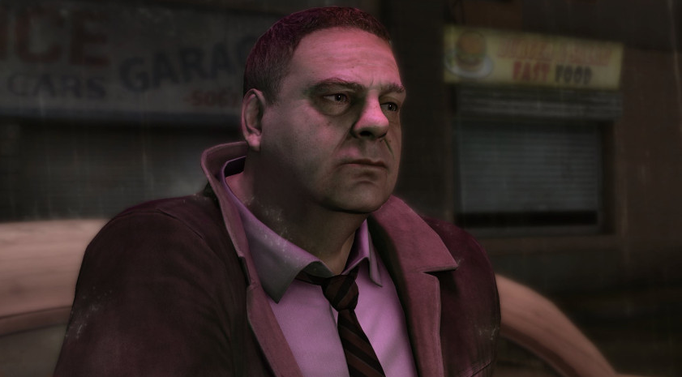
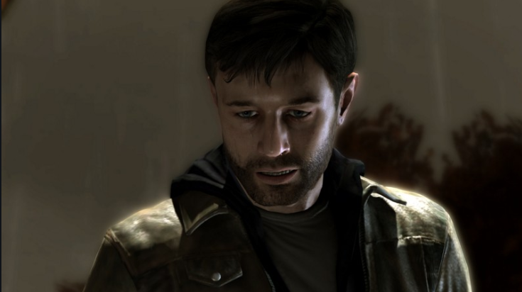
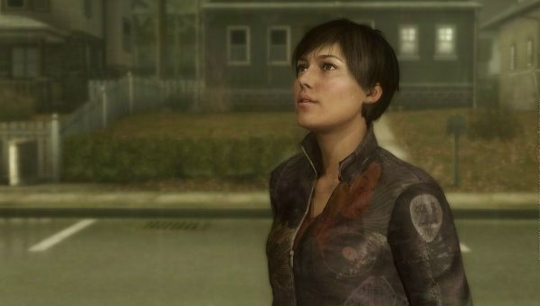

The project's lead director was David Cage, who wrote the
2,000-page script. To create Heavy Rain, he visited
Philadelphia to study the atmosphere. Cage's primary goal was
to address the shortcomings of his previous game, Fahrenheit.
Heavy Rain was composed by Norman Corbeil, who recorded
the soundtrack at Abbey Road Studios.
Heavy Rain received positive reviews from critics and players
alike, praising its emotional and nonlinear narrative, visuals,
and music. However, reviewers noted its mediocre English
voice acting, awkward controls, and plot inconsistencies as
drawbacks.
David Cage
Heavy Rain stands out for its unusual control scheme, which
combines button presses based on on-screen contextual
prompts, controller positioning, and Quick Time Events. The
game is nonlinear: the player's decisions and actions
throughout the game can lead to different storylines and
endings, including the death of one or more characters.
Normand Corbeil
About the Game
Heavy Rain is an adventure game. Heavy Rain's gameplay
differs from that of the adventure games typical at the time
of its release, and David Cage even stated that it does not
belong to that genre: it has no inventory, and the narrative
develops through the player's actions, rather than through
non-interactive cutscenes. Sony Worldwide Studios
representative Michael Denny emphasized that while the
game can be called an "adventure" or action-adventure, the
company itself prefers the definition "interactive drama."
The game features multiple branching and narrative options, and depending on the player's actions, the same events may unfold differently or not occur at all. Heavy Rain is divided into 50 chapters—in different chapters, the player controls different characters, and a completed chapter can be replayed, including replaying a moment without the ability to save. The game features difficulty settings that the player can adjust at any time—depending on these settings, various situations in the game can become more challenging, forcing the player to react faster or offering more complex challenges.
Gameplay
Scott Shelby
Scott Shelby is one of the four playable characters (the other three being Ethan Mars, Norman Jayden, and Madison Paige) in Heavy Rain. A former United States Marine and police lieutenant, Scott has worked as a private investigator since his retirement from the police force. Over the course of the game, his primary goal is to find evidence about the Origami Killer. Scott's partner throughout the game is Lauren Winter, a woman whose son was one of the Origami Killer's victims.

Scott Shelby
Ethan Mars
Ethan Mars is one of the main protagonists and four playable characters (the other three being Scott Shelby, Norman Jayden, and Madison Paige) in Heavy Rain, and the central character of the game overall. Up until 2009, Ethan lived an idyllic and happy life as a successful architect alongside his loving wife Grace Mars and his two sons, Jason and Shaun Mars. However, Ethan's life took the first of two tragic turns when his son Jason was hit by a car and killed. Heavy Rain, set two years later in 2011, focuses on Ethan during the kidnapping of his second son, Shaun.

Ethan Mars
Madison Paige
Madison Paige is one of the main protagonists and four playable characters (the other three being Ethan Mars, Norman Jayden, and Scott Shelby) in Heavy Rain. Madison is a young journalist living alone in the city. Suffering from crippling insomnia and nightmares, she often finds herself checking into local motels for the night - the only place she can relax and sleep in. She is also the star of The Taxidermist, the first DLC for Heavy Rain.

Madison Paige
Norman Jayden
Agent Norman Jayden is one of the main protagonists and four playable characters (the other three being Ethan Mars, Scott Shelby, and Madison Paige) in Heavy Rain. Jayden is a dedicated and thorough member of the FBI, sent to aid the police force with the investigation of the Origami Killer. He uses an experimental device called the ARI (Added Reality Interface), which allows him to investigate crime scenes and analyze evidence in an efficient way. He also struggles against his addiction to, and withdrawal from, a fictional drug called Triptocaine.